12.04.2024
🔥 Приближается МНСК, и секция физической химии с нетерпением ждёт докладов молодых учёных!
✨ Специально для юных физхимиков* мы приготовили набор любого взрослого учёного: фирменные ручка 🖊 и блокнот 🗒 от кафедры физической химии!
🤩 Именно эти два инструмента позволяют записывать идеи 💡, озарения ✨, а также интересные (но не каверзные 🤣) вопросы выступающим!
👨🔬 С нетерпением ждём вас!
P.S.
*или химфизиков❓
Скоро узнаем ответ и на этот вопрос ❗
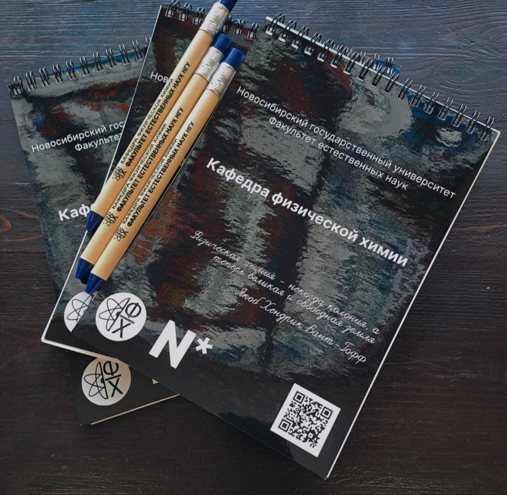
29.03.2024
🔥 История кафедры физической химии Новосибирского госуниверситета – длинный путь, протоптанный многими выдающимися людьми.
🖼 Дополняет коллекцию исторических материалов фотография из начала 90-х годов XX века.
👨 Слева – преподаватель кафедры Евгений Николаевич Савинов, ставший потом заведующим кафедрой, справа – преподаватель физического практикума ФФ Лев Львович Макаршин. Только проследив явление от самого истока, мы можем получить о нем верное понятие. Потому важно помнить тех, кто давал течь этой бурной реке, расширяя берега!
📗 Хочешь узнать больше про кафедру, на которой обучаешься и о сибирских физхимиках?
История кафедры в статьях ниже:
https://vk.com/@physchem_nsu-istoriya-p1
https://vk.com/@physchem_nsu-istoriya-p2
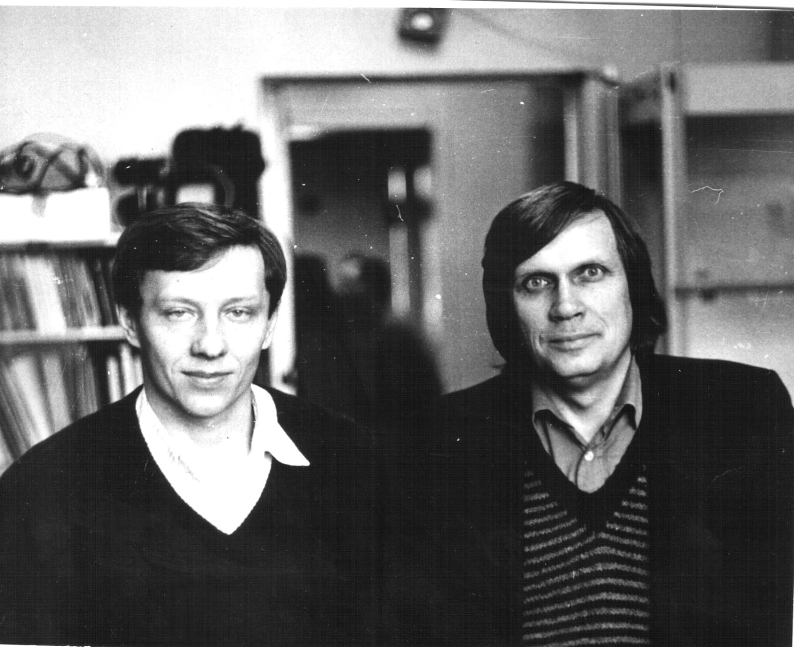
23.03.2024
🔥 Сотрудник кафедры физической химии Павел Анатольевич Симонов (герой предыдущего поста и автор нового спецкурса) поучаствовал в интервью на радио!
🏗 Будучи одним из разработчиков технологии, Павел Анатольевич продемонстрировал, как научные основы физической химии приготовления материалов могут помочь актуальным задачам современности.
✨ Рекомендуем к прослушиванию и радуемся успехам коллег! Творческих свершений обучающимся, сотрудникам и всем неравнодушным к физической химии!
https://smotrim.ru/audio/2761449
19.03.2024
🔥 Создатель спецкурса о физико-химии функциональных материалов, показывает теорию в действии!
👨🔬 Герой сегодняшнего поста – Павел Анатольевич Симонов, старший преподаватель кафедры физической химии, кандидат химических наук.
🪨 Им в составе коллектива учёных был разработан подход к эффективному рециклингу разрушенных бетонных конструкций в материалы для новых.
✨ Поздравляем коллегу с разработкой!
🔎 Подробнее о том, как получать функциональные материалы с нужными свойствами, смотри в опубликованном посте НГУ, а также записывайся на спецкурс Павла Анатольевича!
08.03.2024
Милые девушки!
Самые разные: 👧👩👱♀👵👸💃🚣♀👩🎓🤰🧘♀🧙♀ 🧛♀
Поздравляем всех и каждую с праздником весны 🌱 и света☀!
Пусть счастья будет всегда достаточно, а мечты всегда сбываются ✨!
Желаем, чтобы никто не смел омрачать ваше настроение 🤩
Очень ценим и любим вас ♥
©️Кафедра физической химии
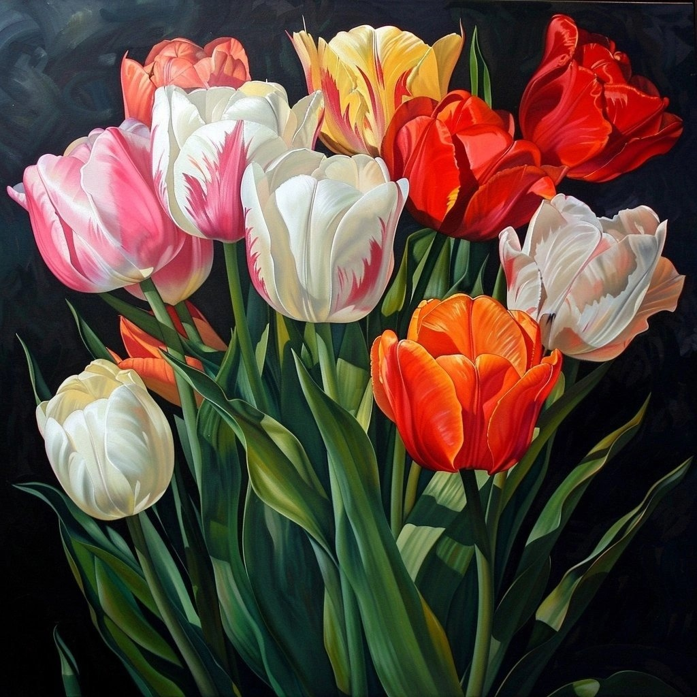
10.02.2024
🌱 Продолжаем знакомство со спецкурсами весеннего семестра
🧲 Традиционный курс весеннего семестра – Основы магнитного резонанса!
🤔 Будешь использовать в своей работе ядерный или электронный магнитный резонанс? Занимаешься исследованием неорганических и органических радикалов? Или может просто желаешь познакомиться с интересной областью?
🔥1 После прохождения данного курса вас не будут пугать никакие COSY и NOESY
🔥2 Вы узнаете принципы работы импульсных методов ЯМР и ЭПР
🔥3 Поймёте корни различий ЭПР и ЯМР в твердом теле и в жидкости
🔥4 Самостоятельно расшифруете спектры известных вам соединений
🔥5 Познакомитесь с интересными эффектами спиновой динамики
🔥❗И многое другое!
📚 Формат – лекции и семинары во главе с профессионалом в области магнитного резонанса
📬 Спецкурс читает: к.х.н. Мельников Анатолий Романович.
Область научных интересов: магнитный резонанс, спиновая химия и спиновая динамика.
08.02.2024
🌱 Начинаем знакомство со спецкурсами весеннего семестра
💥 Представляем новый курс "Физико-химические основы технологий получения функциональных материалов"!
❔ Развитие технологий, электроники, увеличение потребностей химического и иных производств... И к чему это привело?
🔥 Актуально создание материалов с определенными, наперед заданными физико-химическими и механическими свойствами для абсолютно разных приложений
🤔 Материалов много, как же понять, нужен ли мне этот курс?
👨🔬 Формирование специфичных свойств материалов в процессе их приготовления имеет общие закономерности из термодинамики, кинетики, химии органических и неорганических соединений!
🌟 Интересно, на чем основано получение материалов любого масштаба – от наночастиц до макрообъектов сложной формы? Приготовление функциональной керамики, катализаторов, пористых материалов и многое другое?
Тогда приглашаем именно Вас!
❗❗Записаться на курс и указать с какими объектами или системами работаете именно Вы (чтобы было понятно, что именно есть желание узнать на курсе) можно (и нужно 😂) по ссылке:
https://forms.gle/DwHhrj434w9JH6sB7
📬 Курс читает: к.х.н. Павел Анатольевич Симонов. Область научных интересов: приготовление функциональных материалов, в том числе катализаторов
❓Павел Анатольевич с радостью ответит на интересующие Вас вопросы!
📥 spa@catalysis.ru
27.01.2024
🔥 Оформление дипломных и курсовых работ и отчётов!
❗Оформление научных и квалификационных работ требуется проводить в соответствии с существующими правилами (ГОСТы, ISO, обозначения IUPAC и прочее)
🧪Сотрудниками ФЕН НГУ представлены развернутые правила оформления на сайте fen.nsu.ru в разделе "ДИПЛОМНИКУ" (документ Правила.pdf) и требования к работам (Требования.pdf), а также к рецензии (Рецензия.pdf)
🎁 Приятного пользования и единообразия в оформлении работ!
P.S. Скоро будет обновленный пост про список литературы и правила оформления ссылок не пропустите😉
25.01.2024
👩🎓👨🎓 Дорогие наши студенты!
🎉 Спешим вас поздравить с Днем российского студенчества!
🎆 Пусть учение будет в радость, а все трудности лишь способствовали конечному и большему успеху!
🔥 Боритесь, стремитесь и непременно побеждайте!
22.01.2024
🎉 В этот день искренне поздравляем всех аспирантов кафедры физической химии, решивших связать себя с миром науки!
🔥 Будьте целеустремлёнными и достигайте намеченных горизонтов!
🎆 Пусть Вам сопутствуют успехи в жизни, в том числе профессиональные!
😉 Желаем интересных исследований и победных защит!
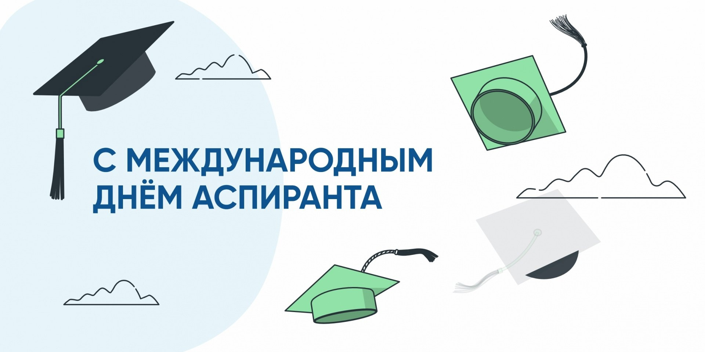
31.12.2023
🧑🔬🧑💼🧓 Дорогие студенты, преподаватели и просто любители физической химии!
🔥 Поздравляем вас с наступающим Новым 2024 годом!
✨ Пусть неиссякаемая энергия и вдохновение сопровождают вас каждый день нового года и помогают успешно решать все задачи физической химии, которые будут перед вами стоять!
🚀 Стремясь к ошеломительным успехам и открытиям, сохраняйте честное имя и доброе сердце!
🎇🎆 Яркого праздника и хорошего отдыха!
💫 Здоровья и благополучия вам и вашим близким!
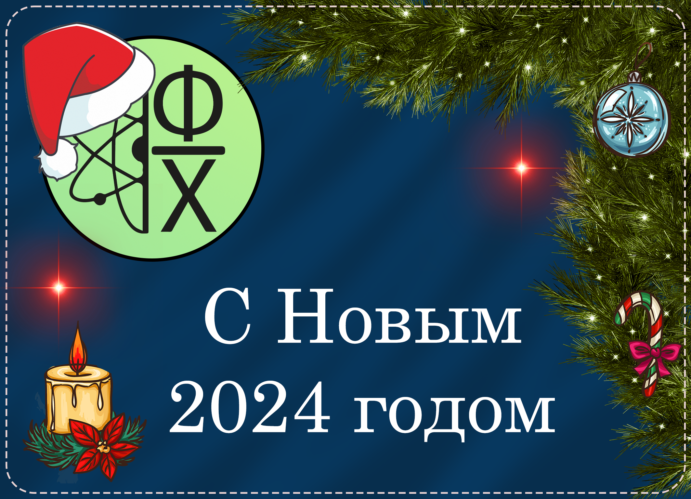
13.12.2023
🔥 В НГУ научились превращать неперерабатываемый пластик в топливо
🤯 Речь о "пакетах-маечках" и другом часто сжигаемом неликвидном пластике.
🛢Первым этапом является их нагревание без доступа воздуха с выделением пиролизного масла.
👩🔬Ученые кафедры физической химии предложили каталитическую технологию, которая прошла первые испытания на экспериментальной установке "Национальной экологической компании".
🧪 Переработка пиролизного масла протекает при 300 °С и повышенном давлении водорода - происходит гидрирование с получением светлых продуктов (Вы только посмотрите разницу!!!)
ℹ Подробнее: https://nauka.tass.ru/nauka/19527481
🎇 Поздравляем НГУ и НЭК с плодотворным сотрудничеством и следим за дальнейшими успехами!
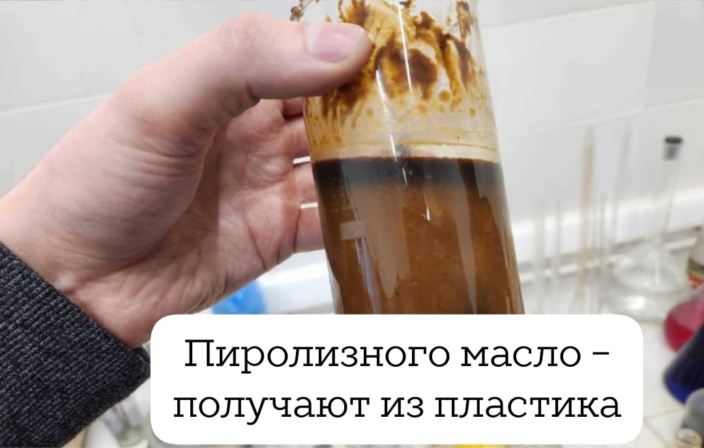 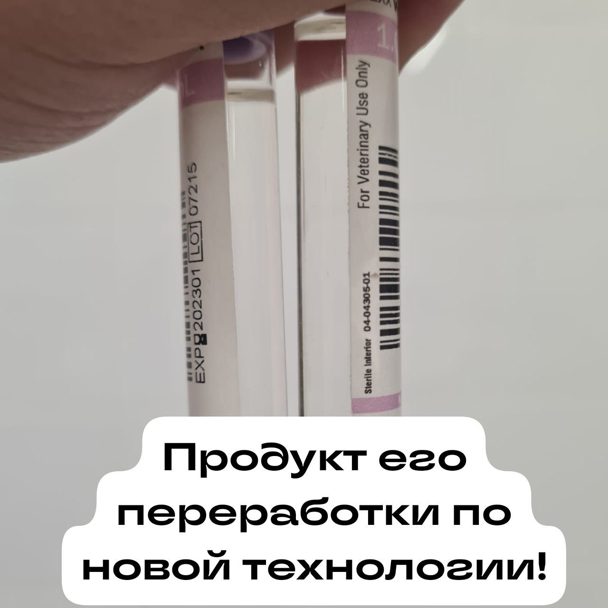
27.11.2023
✨Поздравляем Николая Ивановича Сорокина с юбилеем!
🎉Сегодня исполняется 70 лет кандидату химических наук, одному из основателей и доценту кафедры физической химии факультета естественных наук. Николай Иванович уже много лет преподает на кафедре дисциплины «Экологическая химия», «Фотохимия» и «Введение в кинетику элементарных реакций», воодушевляя студентов заниматься научной деятельностью.
🎁Желаем Николаю Ивановичу крепкого здоровья, научных и творческих достижений, отличных студентов, счастья и благополучия!
С наилучшими пожеланиями, коллектив кафедры физической химии.
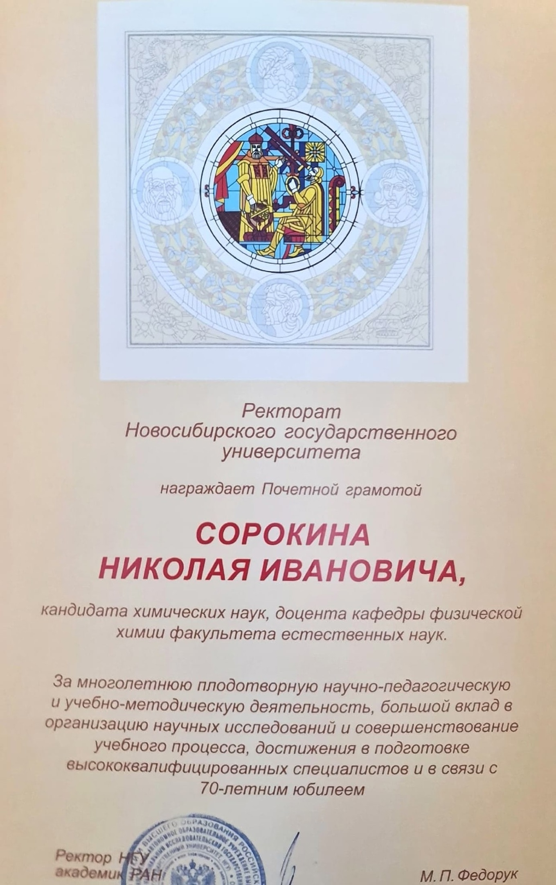 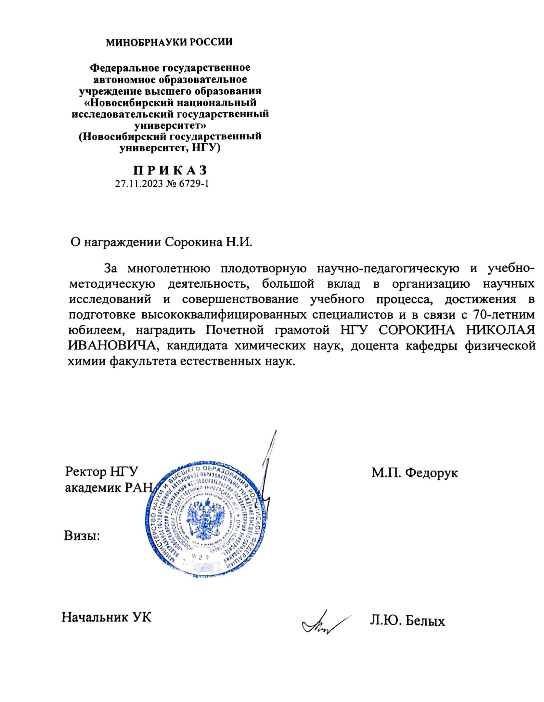
02.11.2023
📃 ГОСТ Р 7.0.100-2018 введен в действие с 1 июля 2019 года и регламентирует оформление ссылок в курсовых, дипломах, отчётах НИР и диссертациях в России.
🧐 Для того, чтобы не потеряться в многообразии правил и научиться оформлять, предлагаем к ознакомлению понятный документ (ГОСТ Р 7.0.100-2018.pdf) - выжимку с множеством примеров библиографических записей для разных источников.
🔥 Также Вашему вниманию представляем актуальный стиль ссылок и библиографических записей (gost-r-7-0-100-2018-numeric-appearance.csl) для программы Mendeley Desktop, необходимый для быстрого оформления. Помните, что эти стили тоже пишут люди, так что в случае неклассических цитат - сверяйтесь с ГОСТ. Инструкция по пользованию стилем расположена здесь: https://bibliostyle.ru/stil-gost-7-0-100-2018-dlya-me..
P.S. Ссылка не для красоты! Не сделаете, как там написано - не получите качественную работу стиля
P.P.S. В иностранных источниках тома (Т.) и страницы (С.) должны быть на английском языке (Vol. и P. соответственно). Если вы правильно следуете инструкции, то Mendeley делает всё именно так.
31.10.2023
❗Уважаемые студенты❗
Зачет по практике состоится
⌚ 25 декабря с 9:00
📍в конференц-зале ИХКГ СО РАН.
📝 Регламент доклада📝
9 минут — выступление;
5 минут — ответы на вопросы;
1 минута — выступление научного руководителя.
📄 Помимо этого, необходимо предоставить бумажный вариант курсовой работы объемом 15-20 страниц (титульный лист, небольшой литературный обзор, экспериментальная часть с описанием методики проводимых работ, описание результатов и список литературы по ГОСТ 2018, как в посте выше).
Всем успехов! Расписание докладов будет опубликовано позже.
13.10.2023
💥🧪Nota bene, будущий учёный!
👨🔬Группа темплатного синтеза ИК СО РАН приглашает студентов на экскурсию и предлагает возможности для выполнения курсовых и дипломных работ!
💡Коллектив ГТС – это молодая и быстроразвивающаяся команда, цель которой – решение важных прикладных задач #импортозамещения и #внедрения новых технологий.
Предлагаемые тематики:
🟠 Цеолитоподобные молекулярные сита – промышленно важные материалы, без которых в настоящее время трудно представить современные предприятия нефтепереработки и нефтехимии, тонкого органического синтеза, очистки воды или разделения газов. Красота структуры в сочетании с необычной физико-химией поверхности ждут своих исследователей!
(Подробнее: https://www.gts-catalysis.ru/zeolites)
🟣 Оксид(ы!) алюминия (и не только) – огромный пласт материалов, которые применяются (или ещё только могут быть применены) в реальных химических процессах как катализаторы и адсорбенты. Вы непременно слышали про алюмооксидную керамику, известную с незапамятных времён. Однако не обманитесь: оксиды и модификация их свойств таят в себе множество до сих пор неразгаданных тайн! Особенно в переработке углеродсодержащего сырья 😉
(Подробнее: https://gts-catalysis.ru/dev#rec419510349)
🟢 Полимерные микросферы – основа биологических тест-систем для быстрой и эффективной диагностики сахарного диабета, сердечно-сосудистых, инфекционных и вирусных заболеваний. Актуальность особенно ярко проявилась в последние годы, что вызывает спрос на специалистов синтеза микросфер с разными размерами и свойствами. Как же получать такие завораживающие сферы?
(Подробнее: https://gts-catalysis.ru/microspheres)
И это ещё не всё...
❓ Оптимистичен 🧘, настойчив 🤸 и готов работать над реальными проектами 🏭?
❗Приходи на встречу в криогенный корпус и познакомься с нашей командой!
📍ул. Академика Будкера, 1
🕟16 октября (пн) в 16:30
ℹ Руководитель группы: к.х.н. Екатерина Васильевна Пархомчук (ekaterina@catalysis.ru)
12.10.2023
👩🔬 "У меня нет слов, чтобы выразить весь восторг от этой работы..."
🔬 Сотрудники Центра коллективного пользования «Ускорительная масс-спектрометрия» под руководством Екатерины Васильевны Пархомчук произвели радиоуглеродное датирование образцов 17 костных фрагментов, найденных при раскопках кургана саргатской культуры раннего железного века.
🏺 "Курган Вергеровского района – один из ~300 на территории Новосибирской области. Он оказался не разграблен и потрясающих находок дал множество. Такие масштабные исследования: раскопки без использования техники, анализ особенностей построения кургана и изотопный анализ – весь комплекс работ выполнен в Новосибирской области! У меня нет слов, чтобы выразить весь восторг от этой работы!" - рассказала и. о. зав. кафедрой физической химии Екатерина Васильевна Пархомчук.
💥 Подробнее читайте в статье: https://www.nsu.ru/n/media/news/nauka/uchenye-akademg.
🤔 Если кто-то вдруг не знал или подзабыл, что такое радиоуглерод, то тут, всего-то за каких-то 30 минут, вы узнаете о нем всё (или почти всё):
https://www.youtube.com/watch?v=_zemY_8Y2U8.
16.09.2023
✨ Общее фото сотрудников и пришедших на встречу аспирантов и студентов кафедры физической химии торжественно ознаменовало вовсю идущий локомотив осеннего семестра! Каждый сотрудник, студент и аспирант кафедры – член большой семьи!
🧑🔬Благодарим за присутствие на этом мероприятии Валентина Николаевича Пармона – научного руководителя кафедры, не только создавшего часть физико-химических дисциплин на ФЕН, но и активно их развивающего.
💥 Студентам 1-3 курса желаем успехов в учёбе и выборе направления преддипломной практики по душе! Коллектив кафедры с радостью примет под своё крыло ещё совсем юных ФЕНиков.
❓Неравнодушен к физической химии в совершенно различных (а порой и умопомрачительных) её проявлениях?
❗Тогда пополняй наши ряды и становись высококвалифицированным специалистом!
🎇 Студентам старших курсов и аспирантам – неминуемых успехов в науке, а сотрудникам кафедры – ещё и неиссякаемого желания передавать знания!
📸 Отдельная благодарность Михаилу Сергеевичу Панову за памятную фотографию!

21.08.2023
💥 На кафедре физической химии НГУ сотрудники группы темплатного синтеза разработали новый гемостатик ЦитоПатч, который эффективен для тест-систем на гемостатические свойства крови и в качестве наполнителя для бинтов.
🔬 Приглашаем Вас познакомиться с разработкой сибирских учёных. Крупные частицы, синтетическое происхождение, белый цвет, быстрый кровоостанавливающий эффект – отличительные особенности ЦитоПатч, позволяющие останавливать кровотечение, не нанося дополнительный вред организму, а также отслеживать состояние раны.
📬 Бабина Ксения Александровна с радостью ответит на интересующие Вас вопросы: k.babina@g.nsu.ru.
📽 https://youtu.be/UYVPMLobyP8
Читайте статью по ссылке
07.08.2023
💥 Сотрудники кафедры не только талантливые учёные и преподаватели. Активные хобби помогают приводить мысли в порядок и не терять себя в динамичном современном мире. Кто-то находит себя в искусстве, кто-то в спорте.
🚲 Александра Михайловна Зима поделится с вами своим секретом "отдыха как смены деятельности" и расскажет впечатления от участия в кросс-кантри велогонке "Зелёный марафон" (84,8 км, набор высоты 1300 м!!!).
Читайте статью по ссылке
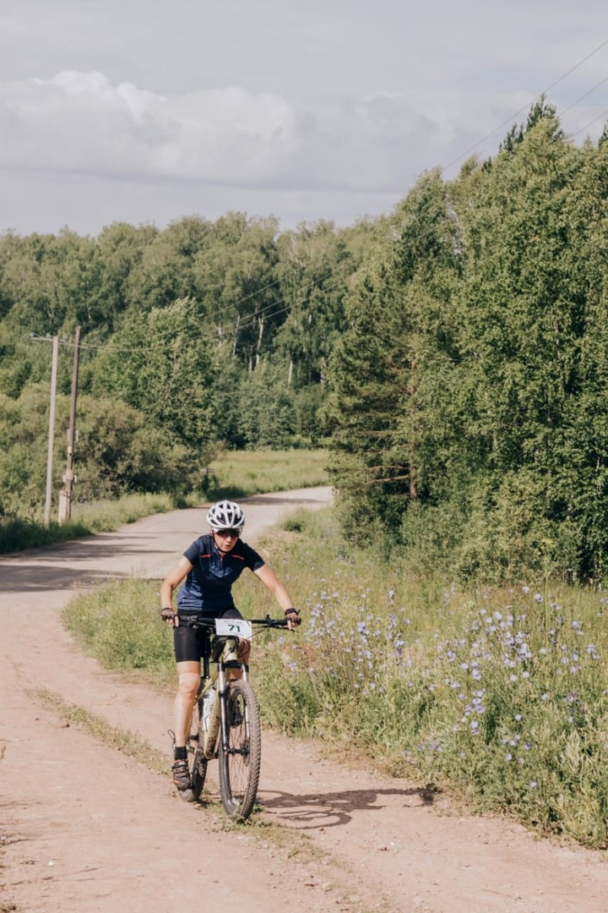 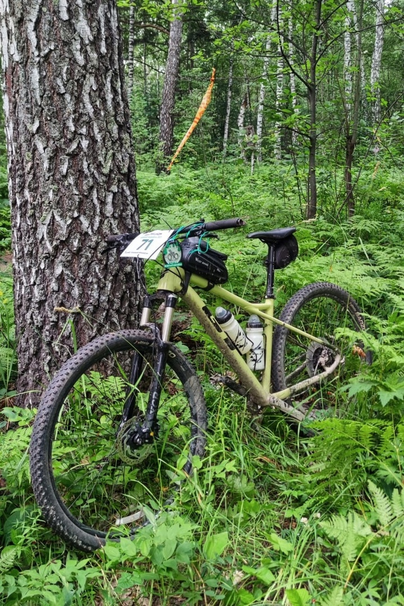
30.07.2023
💥Совмещая работу в научных лабораториях и преподавательскую деятельность, сотрудники кафедры физической химии делятся актуальными знаниями мирового уровня со студентами, ещё только начинающими свой путь в науке. Многолетний опыт преподавания и объяснения нового для слушателей материала нередко приводит к возможности его обобщения – публикации книг по соответствующей тематике.
📚 Так появилась монография "Основы и применение спектроскопии ЭПР и ЯМР в химических исследованиях" для студентов старших курсов и аспирантов, знакомящихся с современными спектроскопическими методами. Она способна ответить на большинство возникающих вопросов на доступном уровне. Авторы – профессионалы своего дела с многолетним стажем практической работы и преподавания – помогают разобраться в современных представлениях некогда загадочного явления магнитного резонанса.
🗺 Книга будет доступна в электронной библиотеке НГУ (https://e-lib.nsu.ru//dsweb/HomePage), а также закуплена в Библиотечный фонд.
#books@physchem_nsu
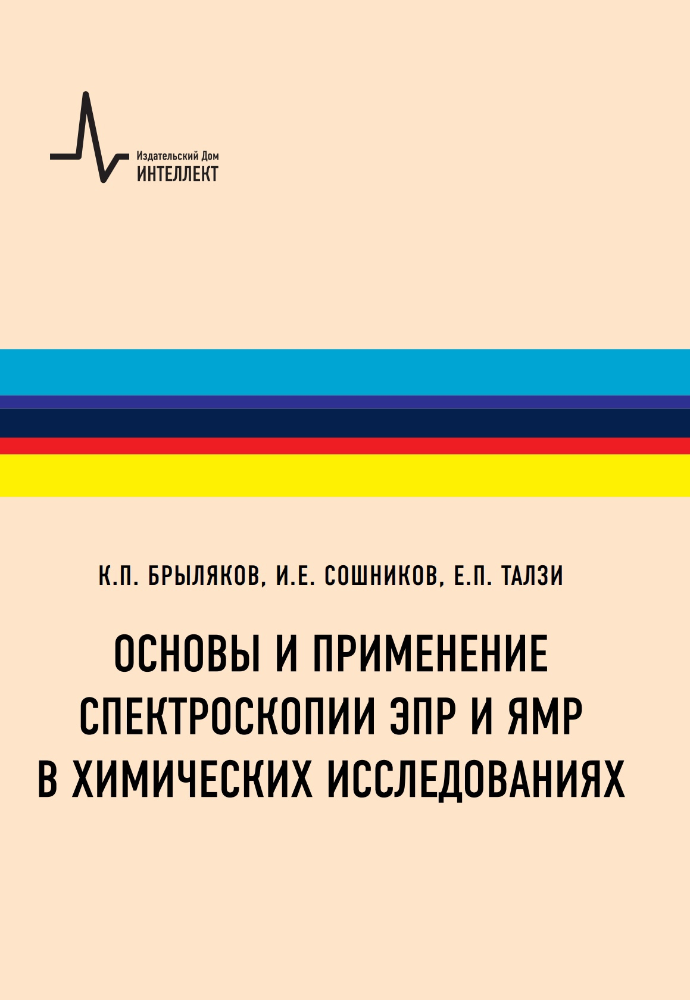 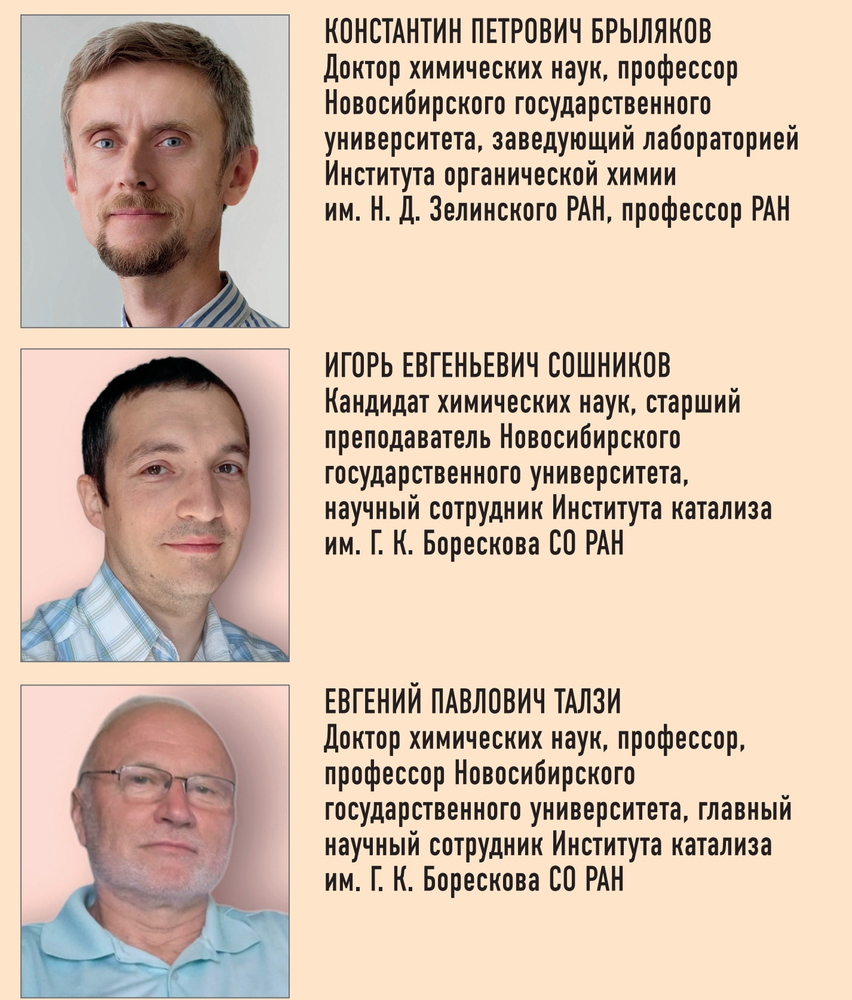
24.06.2023
Сегодня успешно защитили дипломы студенты кафедры физической химии:
Кокоренко А.А.
Пелевина А.А. (лучший доклад)
Черпакова А.В.
Штоль В.С.
Бушмин Д.С. (лучший доклад)
Ефремов А.А.
Шерстюк В.А.
Чернавин П.А. (лучший доклад)
Поздравляем с великолепным завершением важного этапа большого пути! Желаем не останавливаться и продолжать этот светлый путь физической химии!
На фото: студенты принимают поздравления от председателя ГАК, д.ф.м.н., профессора В.В. Ерёмина
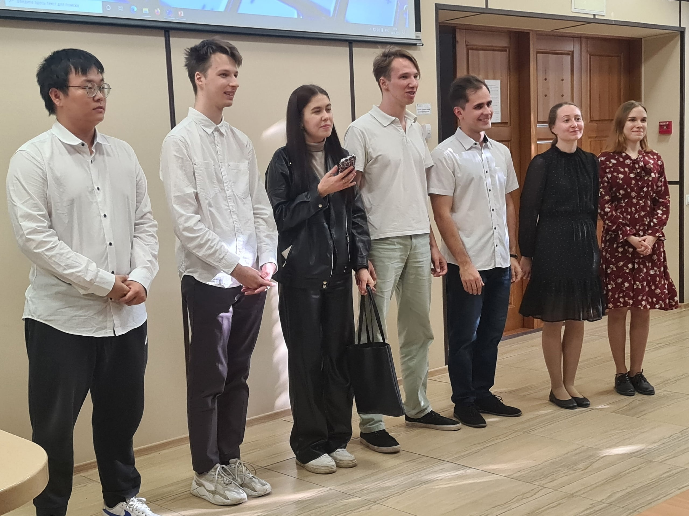 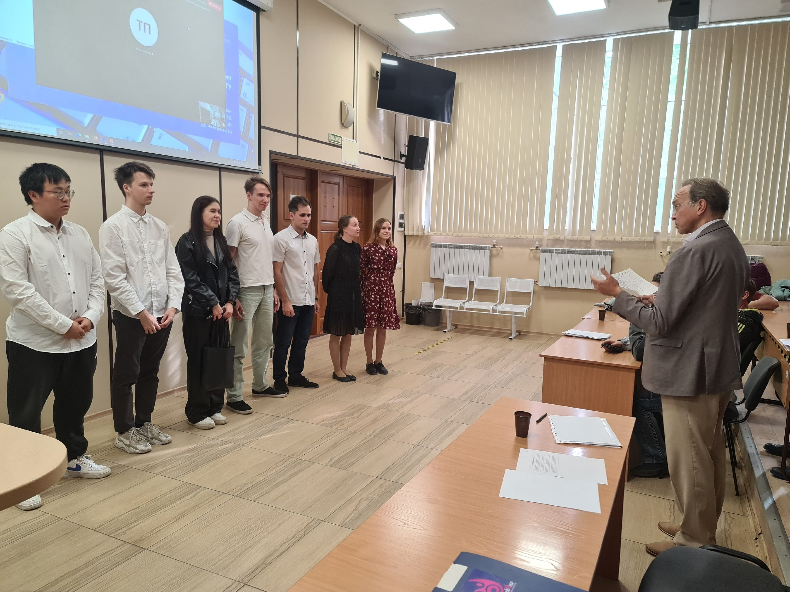
14.06.2023
И.О. заведующего кафедрой физической химии ФЕН НГУ, директор ЦКП «Ускорительная масс-спектрометрия НГУ-ННЦ» Екатерина Васильевна Пархомчук стала руководителем проекта, поддержанного в рамках программы стратегического лидерства «Приоритет 2030» национального проекта «Наука и университеты».
Источник: https://www.nsu.ru/n/media/news/nauka/uchenye-akademg..
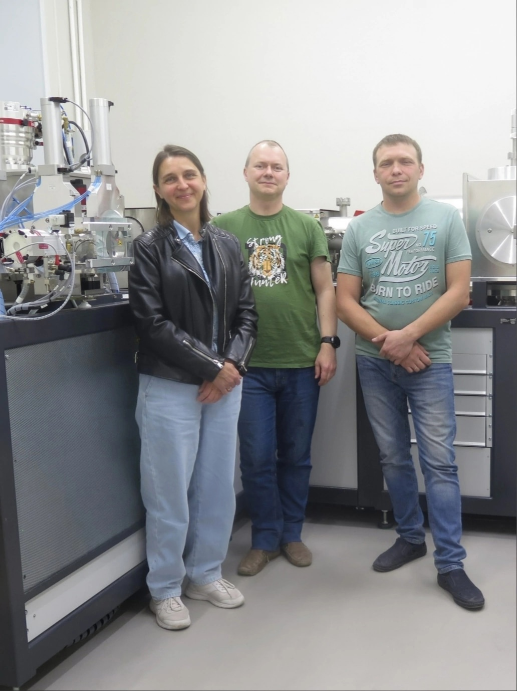
30.05.2023
Сегодня для учащихся 10-класса МАОУ "Гимназия № 3" естественно-научного направления была проведена экскурсия на кафедру физической химии ФЕН НГУ.
Ребята познакомились с современным научным оборудованием, изучили работу спектрофотометра, хроматографа и ЯМР-спектрометра.
Школьники не только узнали о достижениях кафедры, но и примерили на себя роль ученых – на собственном опыте убедились, какой удивительной и захватывающей может быть наука.
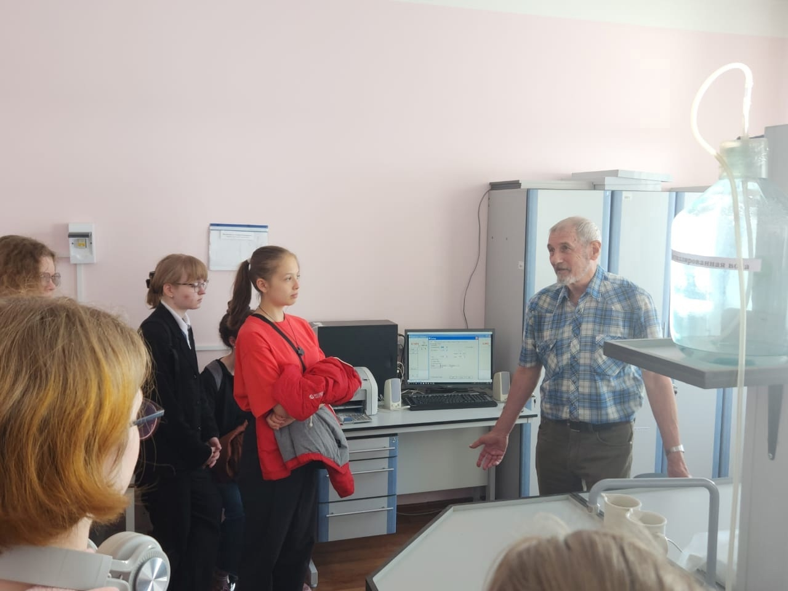 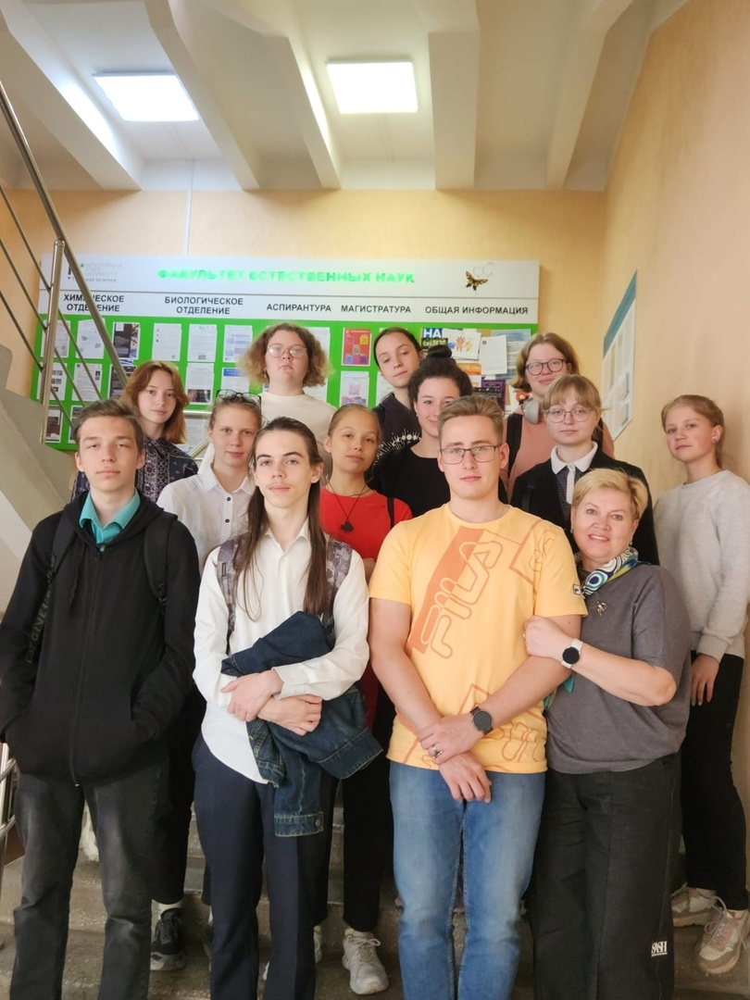